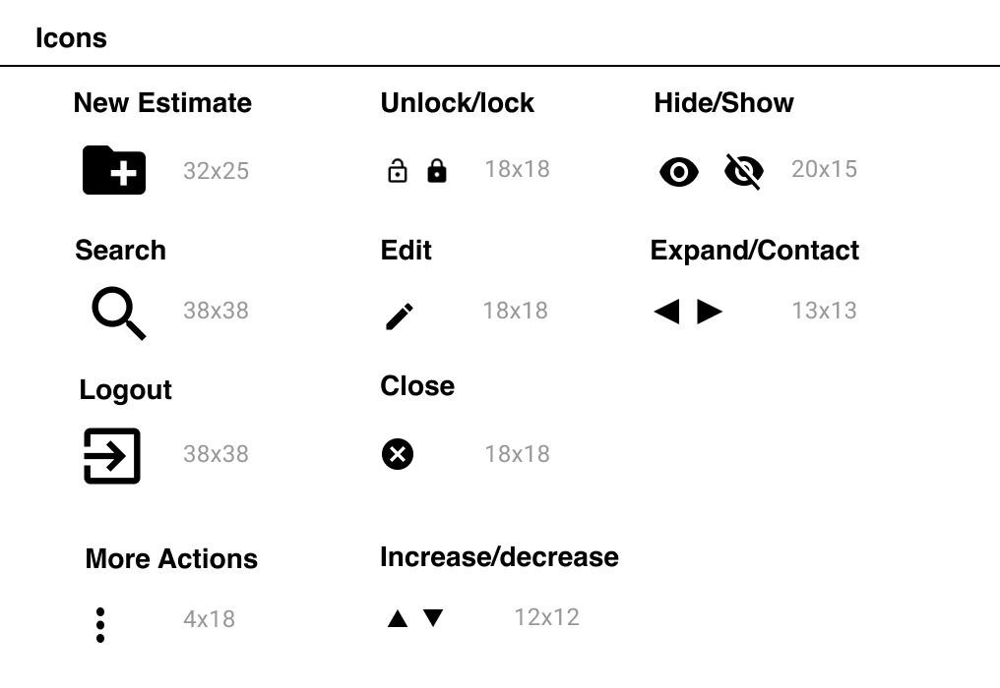
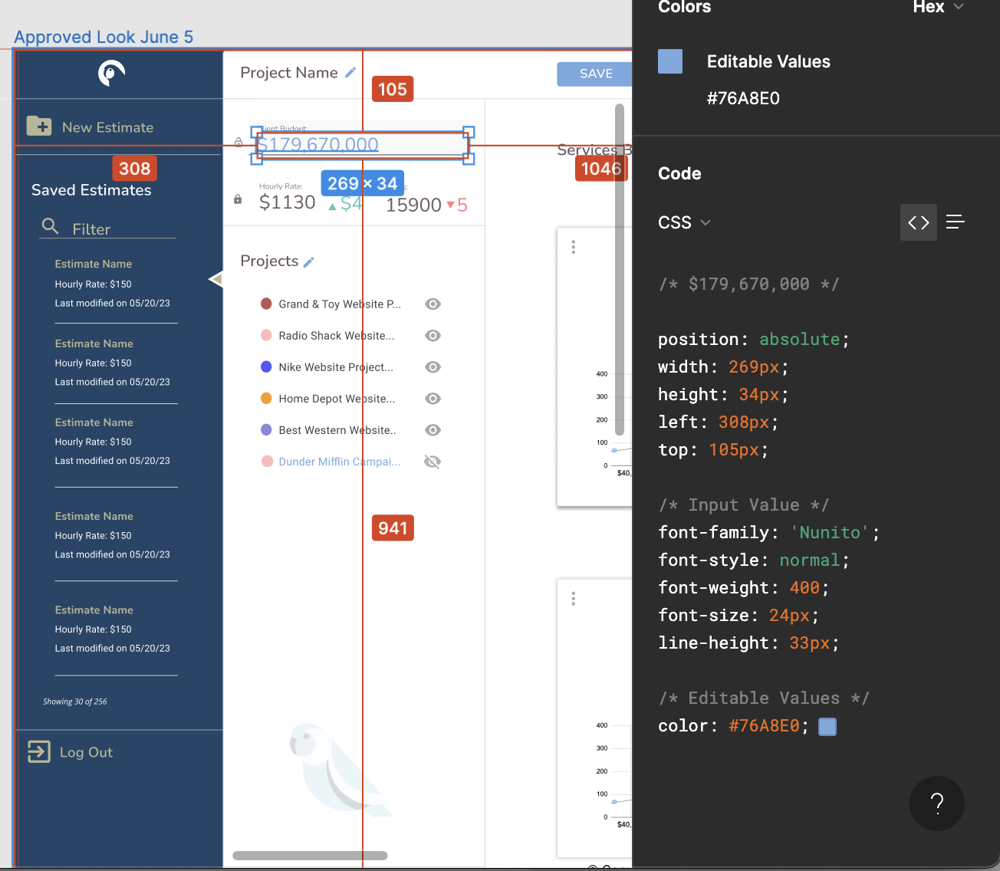

Parakeeto helps agencies track the right metrics and increase profitability. They are a technology-leveraged service firm enabling agencies to improve their performance.
Parakeeto's founders were seeking to build a project-based estimation tool for agency business models. They had a hypothesis that agencies could use their process and system to identify resource and business inefficiencies. The challenge was to design and build a product that could be valuable to Parakeeto's target audience. Since the tech startup was bootstrapped, we needed to validate product solutions quickly and effectively.

We built and validated an estimation tool against early adopters at software development firms and creative studios.
Co-founder, Marcel Petitpas walks audience through final release candidate.
The design process at Parakeeto went smoothly since both founders had prior experiences at tech companies. The team adapted to our daily design thinking sessions for ideating and iterating through solutions. Within a month, we built a solution and tested it against users through our customer development program. Over time we were able to refine the criteria of our ideal buyer. Our customer development program concluded after several months. We collected 100s of user feedback, a product backlog, and a roadmap.
Establishing a solution design series
The core of our ideation process is our daily solution design meetings. This is typically a 90-minute design thinking workshop with key stakeholders. Our solution design meetings help us move through each design phase. Each day we build on top of the last session's customer feedback, ideas, and research. It is the environment we as a group get together to define what should or shouldn’t be built. At the end of our solution design series, we process and transfer all assets and requirements into the product’s backlog so that the work is ready for development.
Since there was no tool like Parakeeto’s Estimate, we had many outstanding questions on whether this product would be valuable. We initially interviewed agencies and confirmed there was an issue with managing resources and accurately projecting estimates for new project proposals. We were able to validate certain agencies are either not tracking resources, or are using convoluted methods to estimate projects. It was confirmed that agencies were losing money or had issues with scaling their businesses because of operational challenges related to forecasting financial pitfalls, and opportunities. After our first round of customer interviews, we were excited and ready to move to the next phase of our design process, which was ideating a product solution that would process agency historical data, and more accurately estimate the business as it relates to fixed-price and time and material projects.
Agencies have a lengthy proposal process. Once the client approves the estimate, it’s then important for an agency to keep costs within budget. In many cases, it’s impossible to not blow a budget when the initial estimation was way off the mark. Agencies have five key stages in the proposal process: discovery, scope estimation, pricing, building the bid, and iterating on the proposal when necessary.
We couldn’t solve all the problems of our target customer, so we decided to focus on two key areas: pricing and bid building. As a result, we targeted looking for comparable projects to understand the agency's historical baseline. The team had attention to building an estimation report that can be used in a bid proposal.

There were four big ideas we were set on. It was evident that the estimation tool would be quite complex and it was imperative we keep the interface simple while ensuring our end-user understood what the next step should be at all times. Saving and sharing estimates was also an important factor for us to get right since we knew our users would need to come back to update their estimates often, and once they were done they would want to share a draft with their team or client. Through our design process, we created an idea of how users can have a walkthrough onboarding process, and connect their time tracking management system to the estimation tool.
Our initial prototype was low effort and high impact since it was a static page that looked like an app. This simple "paper" prototype made it easy for us to test high-level business assumptions with our users, without wasting time on technology overhead. The next prototype version was a bit more sophisticated since it was processing data (project estimates) in a spreadsheet. We would use the synthesized data and visual presentation in our customer interviews. After a few months and many customer interviews later, we released a candidate version of the product.
We conducted 50+ customer interviews with agencies in North America. Each customer interview lasted for 30 mins. All participants are asked structured, predefined, open-ended questions. Early stages of our customer development, participants presented an interactive prototype. Later in our customer development initiative, participants were interacting with our beta solution while we observed and asked questions about the participant’s sentiments. All interviews were recorded, transcribed into text, and imported into our Productboard for tagging/classifying.
We leveraged recurring solutions that solved common design problems. Here are a few solutions that solved our anticipated user interface challenges.
The user enters their client budget and hourly rate into the app and expects to receive updates to resource hours/rates. Our objective was to ensure the user was feeling confident and informed when they received feedback from the app. The feedback was updated in real-time, and the delta result was displayed and color-coded to indicate a positive and negative change in value.
The estimate app has a project tray listing all selected comparable projects from the past. The user has the ability to exclude a specific project’s data from the overall estimate by clicking on the eye icon. Users can preview changes in real-time. The visual chart displays projects which are outliers. The user may want to exclude the project from the estimation process or inspect why the project is irregular based on the evaluation of the chart.
We wanted users to immediately use our estimation tool without conducting formal registration beforehand. Users were able to import their time-tracking data and auto-create an account with a one-button click. We knew that we were going to target Harvest customers first and so started with their single sign-on integration. The user must preview what to expect next which is finding and comparing historical projects. The initial login screen displayed an animated gif on how to select comparable projects.
We understood some agencies would not be keen on importing their company data since we were a new company with no explicit privacy policy. Therefore, we implemented a sample data feature where users could create estimates by using dummy data. This was considered a great user experience for both types of users. Whether you trusted the app or not, the goal here was to get users to see estimation results as quickly as possible.
Users were able to search their entire history of projects from Harvest within the estimation tool. Once users selected a few similarly scoped projects, they are able to see their projected estimation results. It was important for us to ensure that each step of the workflow was cohesive and that the user always knew their current and next step.
It was a priority of ours to simplify UI elements and ensure they are reusable. We benefited from this because we could replicate designs quickly by using premade UI components and elements. Therefore, I was able to focus on information prioritization, workflow optimization, and journey management. My goal was to create a unified language within the team. As a result, we had visual consistency across all designs.
We chose simple and soft colors. The white background represents a blank canvas. Colors were reserved for call-to-actions, critical messages, and labeling of each project in charts and lists.
All icons and general UI elements were taken from Google’s Material Design System. Our team standardized the fonts and provided a central repository for easily accessing assets.
There were a few complicated components created. The estimation input component, project tray, and card component were my favorite since we spent time with users getting the functionality right. The important components were converted to Figma’s Components so that we may standardize our layout across all designs. Some components included states, which allowed engineers to interact with each state. An example of a state change is the card component. Users can click the “more action” hamburger button to remove a specific project’s role. The view of the edit state is designed within the boundaries of the overall card component, but the body contents change. Complex components such as this are further prototyped and standardized in Figma.
Our layout uses a magazine-style layout to accommodate the amount of information presented. Users may expand and contract to adjust the search pane’s priority (located far left). The primary control and feedback is the budget component located on the top left. Secondarily, the preview and controls in the main viewport are for micro-adjustments to the overall estimation.
Engineers had direct access to the prototype and design file. The context was easier to understand since we were able to comment directly on any UI element.
Engineers had direct access to CSS code for each UI element. Assets were easily exported into vector graphics. Our Figma file included text and color styles which could be inspected easily. This made it easy to translate style properties from design to code.
Our final solution design meeting ends with a walk-through of the entire user workflow. Each step of the way we continue to surface edge cases. All high-fidelity and interactive components including all edge cases were imported from Figma into Productboard. Images, comments, notes, and edge cases were attached to each feature.
Productboard was used to store all feature specifications. Further user workflows, empathy maps, and persona definitions were attached to feature items in Productboard. Within Productboard, the engineering team walked through each feature and determined a level of effort. Each feature also had links to user-specific feedback and a weighted value to determine the importance of the business’ strategic drivers. Once each feature had measured effort and value, the team concluded on prioritizing the backlog by least effort and most impactful features.
Explainer video on how to convert feedback into ideas